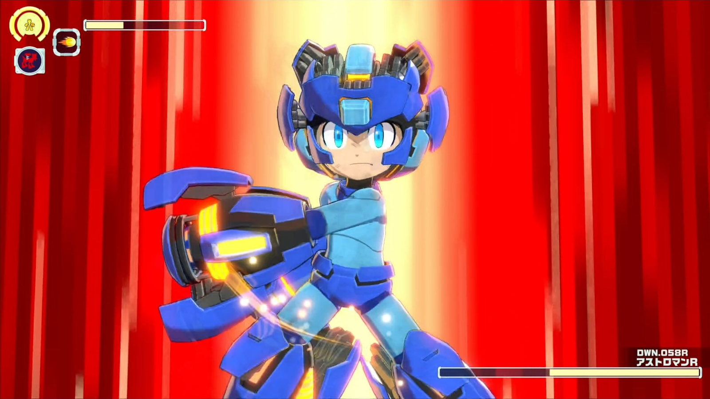
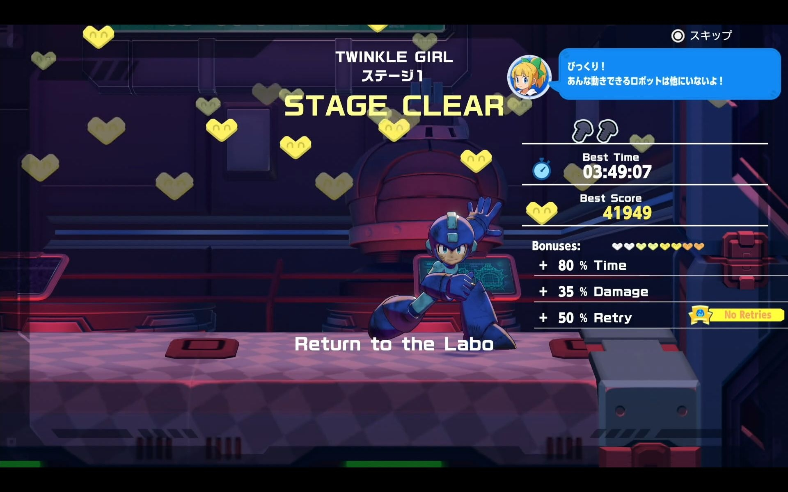
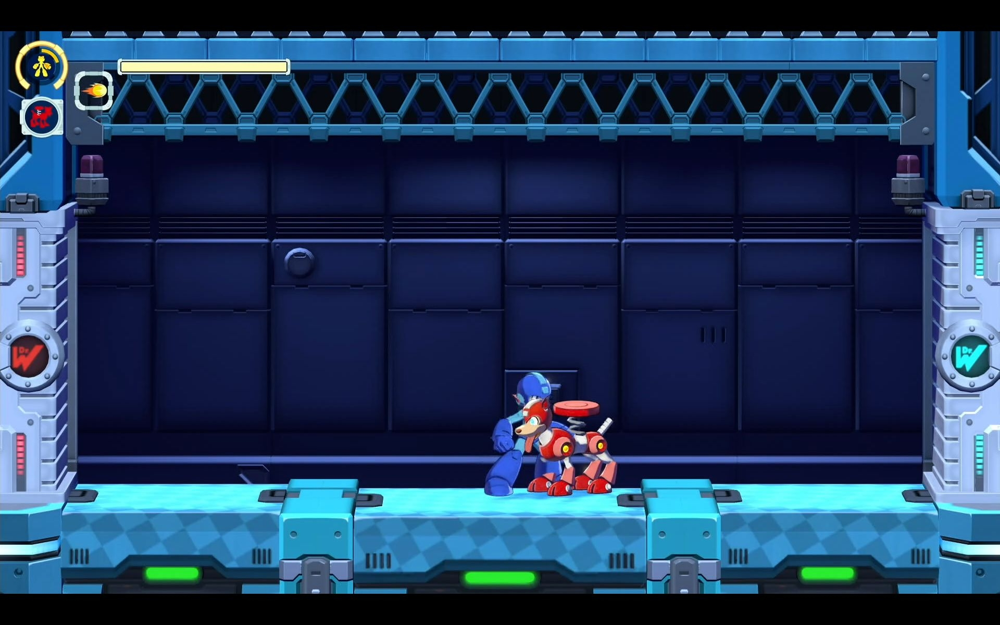
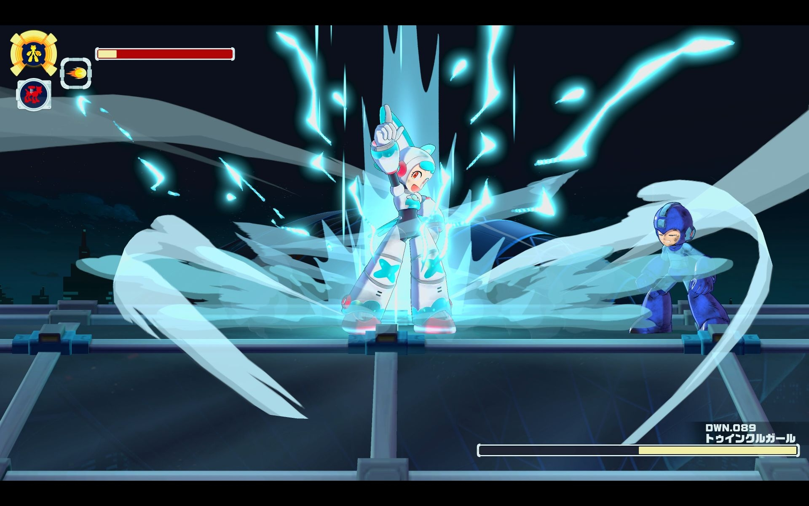

Luiso · 30 de agosto de 2026
Mega Man: Dual Override llegará en 2027 como una nueva entrega completamente original de la saga, y sus desarrolladores tienen un objetivo definido: introducir nuevas ideas sin alejarse de la identidad clásica de Mega Man.
Así lo explicaron el productor de la serie Shinya Izumi, el productor de Dual Override Hiroyuki Minamitani y su director Shinya Ikuta, en una entrevista publicada por el medio japonés 4Gamer.net durante Gamescom 2026.
El proyecto será el equivalente al duodécimo juego numerado de la serie, aunque Capcom decidió no utilizar el número en el título. Según Izumi, la intención es evitar que la numeración cada vez más elevada pueda convertirse en una barrera para los nuevos jugadores y permitir que Dual Override funcione también como una puerta de entrada a la franquicia.

El juego incorporará tres grandes novedades. La primera es Override, un sistema de potenciación temporal que permite acumular energía al derrotar enemigos y utilizarla posteriormente para transformar y fortalecer a Mega Man.
El sistema también estará presente en los enfrentamientos contra los jefes. Cuando la batalla avance, estos podrán activar su propio Override y modificar sus ataques, dando lugar a una segunda fase de los combates.
Los desarrolladores explicaron que buscaron diferenciar este sistema del Double Gear de Mega Man 11. Mientras que aquel podía generar consecuencias importantes después de utilizarlo, Override pretende incentivar un uso más frecuente y agresivo. Después de finalizar, Mega Man queda temporalmente debilitado, pero recupera su estado normal después de un determinado período.

La segunda gran novedad son los Custom Chips, que permitirán modificar las capacidades de Mega Man y adaptar la experiencia al estilo de cada jugador. Entre los ejemplos mostrados se encuentran una barrera defensiva, la posibilidad de automatizar el disparo cargado y un chip capaz de activar automáticamente el Override.
Los jugadores podrán conseguir tornillos durante los diferentes escenarios y utilizarlos para desarrollar progresivamente su configuración. Cada jefe tendrá tres escenarios asociados, lo que permitirá construir el equipamiento antes de enfrentarse a nuevos desafíos.
El equipo también habló sobre Twinkle Girl, uno de los nuevos jefes del juego y un diseño particularmente diferente dentro de la serie. Según Ikuta, el objetivo fue ampliar las posibilidades de diseño de los personajes y crear jefes con personalidades más variadas, desde personajes imponentes hasta otros de carácter más cómico.

A nivel visual, los desarrolladores también decidieron aumentar ligeramente las proporciones de los personajes y trabajar con mayor nivel de detalle. La intención, explicaron, es que Mega Man resulte atractivo tanto para los jugadores más jóvenes como para quienes llevan años siguiendo la franquicia.
Sin embargo, Ikuta fue contundente respecto a uno de los principios centrales del desarrollo: “la esencia de Mega Man” no puede perderse. El equipo quiere conservar elementos como los enemigos y jefes expresivos, el diseño de niveles y, especialmente, la sensación de superar desafíos mediante habilidad y aprendizaje.
La entrevista también revela que el equipo está formado tanto por desarrolladores que trabajaron en títulos anteriores como por nuevos integrantes que son fanáticos de Mega Man. Según los responsables del proyecto, esta combinación generacional permitió discutir cómo actualizar la fórmula sin abandonar sus características fundamentales.
Mega Man: Dual Override está previsto para 2027 en PC, Nintendo Switch 2, PlayStation 5, Xbox Series X|S, Nintendo Switch, PlayStation 4 y Xbox One.